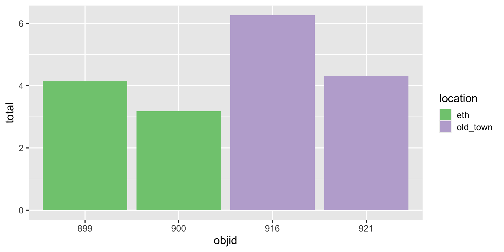

| module | date | topic |
|---|---|---|
| 1 | 22 February 2024 | Welcome & get ready for the course |
| 2 | 29 February 2024 | Data science lifecycle & Exploratory data analysis using visualization |
| 3 | 07 March 2024 | Data transformation with dplyr |
| 4 | 14 March 2024 | Data import & Data organization in spreadsheets |
| 5 | 21 March 2024 | Conditions & Dates & Tables |
| 6 | 28 March 2024 | Data types & Vectors & Pivoting |
| NA | 04 April 2024 | Easter Break |
| 7 | 11 April 2024 | Joining tables & Creating and publishing scholarly articles with Quarto and GitHub pages |
| 8 | 18 April 2024 | Waste Research |
| 9 | 25 April 2024 | Research Design |
| 10 | 02 May 2024 | Survey Design |
| NA | 09 May 2024 | Auffahrt Break |
| 11 | 16 May 2024 | Pre-test and logistics |
| NA | 23 May 2024 | Data collection |
| 12 | 30 May 2024 | Data analysis & report writing |
| NA | 06 June 2024 | Project Submission Deadline |
| NA | 13 June 2024 | Exam |
Data types & Vectors & Pivoting
Research Beyond the Lab: Open Science and Research Methods for a Global Engineer
Course calendar
- 04th April 2024: no class, Easter Break
Learning Objectives (for this week)
- Learners can identify different ways of accessing a vector from a dataframe
- Learners can list the four main atomic vector types in R.
- Learners can apply functions from the tidyr R Package to transform their data from a wide to a long format and vice versa.
Part 1: Cross-references
Cross references
Help readers to navigate your document with numbered references and hyperlinks to entities like figures and tables.
Cross referencing steps:
- Add a caption to your figure or table.
- Give an ID to your figure or table, starting with
fig-ortbl-. - Refer to it with
@fig-...or@tbl-....
Table cross references
The presence of the caption (A few penguins) and label (#tbl-penguins) make this table reference-able:
See @tbl-penguins for data on a few penguins.
becomes:
See Table 1 for data on a few penguins.
```{r}
#| label: tbl-penguins
#| tbl-cap: A few penguins
head(penguins) |>
gt()
```| species | island | bill_length_mm | bill_depth_mm | flipper_length_mm | body_mass_g | sex | year |
|---|---|---|---|---|---|---|---|
| Adelie | Torgersen | 39.1 | 18.7 | 181 | 3750 | male | 2007 |
| Adelie | Torgersen | 39.5 | 17.4 | 186 | 3800 | female | 2007 |
| Adelie | Torgersen | 40.3 | 18.0 | 195 | 3250 | female | 2007 |
| Adelie | Torgersen | NA | NA | NA | NA | NA | 2007 |
| Adelie | Torgersen | 36.7 | 19.3 | 193 | 3450 | female | 2007 |
| Adelie | Torgersen | 39.3 | 20.6 | 190 | 3650 | male | 2007 |
Figure cross references
The presence of the caption (A few penguins) and label (#fig-penguins) make this figure reference-able:
See @fig-penguins for data on a few penguins.
becomes:
See Figure 1 for data on a few penguins.
```{r}
#| label: fig-penguins
#| fig-cap: A few penguins
#| fig-width: 6
#| fig-asp: 0.618
ggplot(penguins, aes(x = species, fill = species)) +
geom_bar(show.legend = FALSE)
```
Your turn: md-06-exercises - cross-references
- Open posit.cloud in your browser (use your bookmark).
- Open the ds4owd workspace for the course.
- In the File Manager in the bottom right window, locate the
md-06a-cross-references.qmdfile and click on it to open it in the top left window. - Follow instructions in the file
10:00
Part 2: Data types and vectors
Why care about data types?
Example: survey data
A survey about recycling behaviour in the city of Zurich:
job: What is your occupation?price_glass: What monthly subscription would you be willing to pay for a metal/glass bin outside your home?
| id | job | price_glass |
|---|---|---|
| 1 | Student | 0 |
| 2 | Retired | 0 |
| 3 | Other | 0 |
| 4 | Employed | 10 |
| 5 | Employed | See comment |
| 6 | Student | 5-10 |
| 7 | Student | 0 |
| 8 | Retired | 0 |
| 9 | Student | 10 |
| 10 | Employed | 0 |
| 11 | Employed | 20 (2chf per person with 10 people in the WG) |
| 12 | Student | 10 |
| 13 | Student | 10 |
| 14 | Employed | 0 |
| 15 | Student | 10 |
| 16 | Student | 0 |
| 17 | Employed | 5-10 |
| 18 | Other | 0 |
| 19 | Student | 0 |
| 20 | Employed | 10 |
| 21 | Employed | 0 |
| 22 | Employed | 5 |
Oh why won’t you work?!
survey_data_small |>
summarise(mean_price_glass = mean(price_glass))# A tibble: 1 × 1
mean_price_glass
<dbl>
1 NAOh why won’t you still work??!!
survey_data_small |>
summarise(mean_price_glass = mean(price_glass, na.rm = TRUE))# A tibble: 1 × 1
mean_price_glass
<dbl>
1 NATake a breath and look at your data
| id | job | price_glass |
|---|---|---|
| 1 | Student | 0 |
| 2 | Retired | 0 |
| 3 | Other | 0 |
| 4 | Employed | 10 |
| 5 | Employed | See comment |
| 6 | Student | 5-10 |
| 7 | Student | 0 |
| 8 | Retired | 0 |
| 9 | Student | 10 |
| 10 | Employed | 0 |
| 11 | Employed | 20 (2chf per person with 10 people in the WG) |
| 12 | Student | 10 |
| 13 | Student | 10 |
| 14 | Employed | 0 |
| 15 | Student | 10 |
| 16 | Student | 0 |
| 17 | Employed | 5-10 |
| 18 | Other | 0 |
| 19 | Student | 0 |
| 20 | Employed | 10 |
| 21 | Employed | 0 |
| 22 | Employed | 5 |
Take a breath and look at your data
# A tibble: 22 × 3
id job price_glass
<int> <chr> <chr>
1 1 Student 0
2 2 Retired 0
3 3 Other 0
4 4 Employed 10
5 5 Employed See comment
6 6 Student 5-10
7 7 Student 0
8 8 Retired 0
9 9 Student 10
10 10 Employed 0
# ℹ 12 more rowsVery common data tidying step!
Very common data tidying step!
| id | job | price_glass_new | price_glass |
|---|---|---|---|
| 1 | Student | 0 | 0 |
| 2 | Retired | 0 | 0 |
| 3 | Other | 0 | 0 |
| 4 | Employed | 10 | 10 |
| 5 | Employed | NA | See comment |
| 6 | Student | 7.5 | 5-10 |
| 7 | Student | 0 | 0 |
| 8 | Retired | 0 | 0 |
| 9 | Student | 10 | 10 |
| 10 | Employed | 0 | 0 |
| 11 | Employed | 20 | 20 (2chf per person with 10 people in the WG) |
| 12 | Student | 10 | 10 |
| 13 | Student | 10 | 10 |
| 14 | Employed | 0 | 0 |
| 15 | Student | 10 | 10 |
| 16 | Student | 0 | 0 |
| 17 | Employed | 7.5 | 5-10 |
| 18 | Other | 0 | 0 |
| 19 | Student | 0 | 0 |
| 20 | Employed | 10 | 10 |
| 21 | Employed | 0 | 0 |
| 22 | Employed | 5 | 5 |
Sumamrise? Argh!!!!
survey_data_small |>
mutate(price_glass_new = case_when(
price_glass == "5-10" ~ "7.5",
price_glass == "05-Oct" ~ "7.5",
str_detect(price_glass, pattern = "20") == TRUE ~ "20",
str_detect(price_glass, pattern = "See comment") == TRUE ~ NA_character_,
TRUE ~ price_glass
)) |>
summarise(mean_price_glass = mean(price_glass_new, na.rm = TRUE))# A tibble: 1 × 1
mean_price_glass
<dbl>
1 NAAlways respect your data types!
Taking the mean of vector with type “character” is not possible.
# A tibble: 22 × 4
id job price_glass price_glass_new
<int> <chr> <chr> <chr>
1 1 Student 0 0
2 2 Retired 0 0
3 3 Other 0 0
4 4 Employed 10 10
5 5 Employed See comment <NA>
6 6 Student 5-10 7.5
7 7 Student 0 0
8 8 Retired 0 0
9 9 Student 10 10
10 10 Employed 0 0
# ℹ 12 more rowsAlways respect your data types!
survey_data_small |>
mutate(price_glass_new = case_when(
price_glass == "5-10" ~ "7.5",
price_glass == "05-Oct" ~ "7.5",
str_detect(price_glass, pattern = "20") == TRUE ~ "20",
str_detect(price_glass, pattern = "See comment") == TRUE ~ NA_character_,
TRUE ~ price_glass
)) |>
mutate(price_glass_new = as.numeric(price_glass_new)) |>
summarise(mean_price_glass = mean(price_glass_new, na.rm = TRUE))# A tibble: 1 × 1
mean_price_glass
<dbl>
1 4.76My turn: Types of vectors & For loops
Sit back and enjoy!
25:00
Take a break
Please get up and move! Let your emails rest in peace.

10:00
Your turn: md-06-exercises - types
- Open posit.cloud in your browser (use your bookmark).
- Open the ds4owd workspace for the course.
- In the File Manager in the bottom right window, locate the
md-06b-types-your-turn.qmdfile and click on it to open it in the top left window. - Follow instructions in the file
35:00
Take a break
Please get up and move! Let your emails rest in peace.

10:00
Part 3: tidyr - long and wide formats
.
Illustrations from the Openscapes blog Tidy Data for reproducibility, efficiency, and collaboration by Julia Lowndes and Allison Horst
.
Illustrations from the Openscapes blog Tidy Data for reproducibility, efficiency, and collaboration by Julia Lowndes and Allison Horst
.
Illustrations from the Openscapes blog Tidy Data for reproducibility, efficiency, and collaboration by Julia Lowndes and Allison Horst
A grammar of data tidying

The goal of tidyr is to help you tidy your data via
- pivoting for going between wide and long data
- splitting and combining character columns
- nesting and unnesting columns
- clarifying how
NAs should be treated
Slide taken from Data Science in a Box
Pivoting data

Waste characterisation data
| objid | location | pet | metal_alu | glass | paper | other | total |
|---|---|---|---|---|---|---|---|
| 900 | eth | 0.06 | 0.06 | 0.58 | 0.21 | 1.14 | 2.05 |
| 899 | eth | 0.14 | 0.01 | 0.18 | 0.28 | 3.04 | 3.64 |
| 921 | old_town | 0.00 | 0.00 | 0.00 | 0.41 | 1.57 | 1.99 |
| 916 | old_town | 0.17 | 0.04 | 0.80 | 0.55 | 0.62 | 2.19 |
| 900 | eth | 0.10 | 0.04 | 0.00 | 0.40 | 0.58 | 1.12 |
| 899 | eth | 0.08 | 0.03 | 0.00 | 0.05 | 0.34 | 0.50 |
| 921 | old_town | 0.08 | 0.03 | 0.30 | 0.40 | 1.52 | 2.33 |
| 916 | old_town | 0.11 | 0.04 | 0.92 | 1.01 | 1.99 | 4.07 |
How would you plot this?

Three variables
| objid | location | total |
|---|---|---|
| 900 | eth | 2.05 |
| 899 | eth | 3.64 |
| 921 | old_town | 1.99 |
| 916 | old_town | 2.19 |
| 900 | eth | 1.12 |
| 899 | eth | 0.50 |
| 921 | old_town | 2.33 |
| 916 | old_town | 4.07 |
Three variables -> three aesthetics
And how to plot this?

Reminder: Data (in wide format)
| objid | location | pet | metal_alu | glass | paper | other |
|---|---|---|---|---|---|---|
| 900 | eth | 0.06 | 0.06 | 0.58 | 0.21 | 1.14 |
| 899 | eth | 0.14 | 0.01 | 0.18 | 0.28 | 3.04 |
| 921 | old_town | 0.00 | 0.00 | 0.00 | 0.41 | 1.57 |
| 916 | old_town | 0.17 | 0.04 | 0.80 | 0.55 | 0.62 |
| 900 | eth | 0.10 | 0.04 | 0.00 | 0.40 | 0.58 |
| 899 | eth | 0.08 | 0.03 | 0.00 | 0.05 | 0.34 |
| 921 | old_town | 0.08 | 0.03 | 0.30 | 0.40 | 1.52 |
| 916 | old_town | 0.11 | 0.04 | 0.92 | 1.01 | 1.99 |
You need: A long format
| objid | location | waste_category | weight |
|---|---|---|---|
| 900 | eth | pet | 0.06 |
| 900 | eth | metal_alu | 0.06 |
| 900 | eth | glass | 0.58 |
| 900 | eth | paper | 0.21 |
| 900 | eth | other | 1.14 |
| 899 | eth | pet | 0.14 |
| 899 | eth | metal_alu | 0.01 |
| 899 | eth | glass | 0.18 |
| 899 | eth | paper | 0.28 |
| 899 | eth | other | 3.04 |
| 921 | old_town | pet | 0.00 |
| 921 | old_town | metal_alu | 0.00 |
| 921 | old_town | glass | 0.00 |
| 921 | old_town | paper | 0.41 |
| 921 | old_town | other | 1.57 |
| 916 | old_town | pet | 0.17 |
| 916 | old_town | metal_alu | 0.04 |
| 916 | old_town | glass | 0.80 |
| 916 | old_town | paper | 0.55 |
| 916 | old_town | other | 0.62 |
| 900 | eth | pet | 0.10 |
| 900 | eth | metal_alu | 0.04 |
| 900 | eth | glass | 0.00 |
| 900 | eth | paper | 0.40 |
| 900 | eth | other | 0.58 |
| 899 | eth | pet | 0.08 |
| 899 | eth | metal_alu | 0.03 |
| 899 | eth | glass | 0.00 |
| 899 | eth | paper | 0.05 |
| 899 | eth | other | 0.34 |
| 921 | old_town | pet | 0.08 |
| 921 | old_town | metal_alu | 0.03 |
| 921 | old_town | glass | 0.30 |
| 921 | old_town | paper | 0.40 |
| 921 | old_town | other | 1.52 |
| 916 | old_town | pet | 0.11 |
| 916 | old_town | metal_alu | 0.04 |
| 916 | old_town | glass | 0.92 |
| 916 | old_town | paper | 1.01 |
| 916 | old_town | other | 1.99 |
Three variables -> three aesthetics

How to
waste_data_untidy | objid | location | pet | metal_alu | glass | paper | other |
|---|---|---|---|---|---|---|
| 900 | eth | 0.06 | 0.06 | 0.58 | 0.21 | 1.14 |
| 899 | eth | 0.14 | 0.01 | 0.18 | 0.28 | 3.04 |
| 921 | old_town | 0.00 | 0.00 | 0.00 | 0.41 | 1.57 |
| 916 | old_town | 0.17 | 0.04 | 0.80 | 0.55 | 0.62 |
| 900 | eth | 0.10 | 0.04 | 0.00 | 0.40 | 0.58 |
| 899 | eth | 0.08 | 0.03 | 0.00 | 0.05 | 0.34 |
| 921 | old_town | 0.08 | 0.03 | 0.30 | 0.40 | 1.52 |
| 916 | old_town | 0.11 | 0.04 | 0.92 | 1.01 | 1.99 |
How to
| objid | location | waste_category | weight |
|---|---|---|---|
| 900 | eth | pet | 0.06 |
| 900 | eth | metal_alu | 0.06 |
| 900 | eth | glass | 0.58 |
| 900 | eth | paper | 0.21 |
| 900 | eth | other | 1.14 |
| 899 | eth | pet | 0.14 |
| 899 | eth | metal_alu | 0.01 |
| 899 | eth | glass | 0.18 |
| 899 | eth | paper | 0.28 |
| 899 | eth | other | 3.04 |
| 921 | old_town | pet | 0.00 |
| 921 | old_town | metal_alu | 0.00 |
| 921 | old_town | glass | 0.00 |
| 921 | old_town | paper | 0.41 |
| 921 | old_town | other | 1.57 |
| 916 | old_town | pet | 0.17 |
| 916 | old_town | metal_alu | 0.04 |
| 916 | old_town | glass | 0.80 |
| 916 | old_town | paper | 0.55 |
| 916 | old_town | other | 0.62 |
| 900 | eth | pet | 0.10 |
| 900 | eth | metal_alu | 0.04 |
| 900 | eth | glass | 0.00 |
| 900 | eth | paper | 0.40 |
| 900 | eth | other | 0.58 |
| 899 | eth | pet | 0.08 |
| 899 | eth | metal_alu | 0.03 |
| 899 | eth | glass | 0.00 |
| 899 | eth | paper | 0.05 |
| 899 | eth | other | 0.34 |
| 921 | old_town | pet | 0.08 |
| 921 | old_town | metal_alu | 0.03 |
| 921 | old_town | glass | 0.30 |
| 921 | old_town | paper | 0.40 |
| 921 | old_town | other | 1.52 |
| 916 | old_town | pet | 0.11 |
| 916 | old_town | metal_alu | 0.04 |
| 916 | old_town | glass | 0.92 |
| 916 | old_town | paper | 1.01 |
| 916 | old_town | other | 1.99 |
Three variables -> three aesthetics
Homework assignments module 6
Module 6 documentation
Homework due date
- Homework assignment due: Wednesday, April 10th
Wrap-up
Thanks! 🌻
Slides created via revealjs and Quarto: https://quarto.org/docs/presentations/revealjs/ Access slides as PDF on GitHub
All material is licensed under Creative Commons Attribution Share Alike 4.0 International.
References
Ben Aleya, Ali, Daniel Biek, Lin Boynton, Julia Jaeggi, Sebastian Camilo Loos, Chiara Meyer-Piening, Jonathan Olal Ogwang, et al. 2022. “Research Beyond the Lab, Spring Term 2022, Global Health Engineering, ETH Zurich. Raw Data and Analysis-Ready Derived Data on Waste Management in Public Spaces in Zurich, Switzerland.” Zenodo. https://doi.org/10.5281/ZENODO.7331120.